Welcome to Parabollica Digital Solutions, your gateway to unparalleled innovation and excellence in the digital sphere. At Parabollica, we pride ourselves on being more than just a service provider; we're your strategic partner in navigating the complex landscape of modern business technology. With a focus on precision and agility, we specialize in an extensive range of services designed to propel your business to new heights of success. Find out more below.
Experience unparalleled growth and speed with Parabollica's innovative digital strategies. In today's fast-paced digital landscape, maintaining a competitive edge is essential for business success. Our solutions are meticulously designed to not just keep pace but to drive your business forward, propelling you towards your goals with unmatched efficiency and agility.
With our expertise at your side, navigating the complexities of the digital world becomes effortless. From strategic planning to implementation and beyond, we are committed to accelerating your business towards new heights of success. Let Parabollica be your trusted partner on the journey to achieving your goals, where every step forward is a leap towards a brighter future.
At Parabollica, we're committed to helping you stay ahead of the competition in today's rapidly evolving digital landscape. Our state-of-the-art technology solutions are designed to equip your business with the tools and capabilities needed to thrive and succeed.
By leveraging the latest advancements in technology, we ensure your business remains at the forefront of innovation. Our solutions are tailored to meet your unique needs, providing a competitive edge that drives growth and success in the digital age. With Parabollica, you can confidently embrace the future, knowing you have the best technology solutions supporting your journey.
Unlock the power of data-driven decision-making with our advanced analytics solutions. From data collection to analysis and visualization, we help you make informed decisions that drive business growth and success.
Our data analytics solutions provide you with actionable insights, allowing you to understand your business better and make strategic decisions that enhance performance. By turning raw data into valuable information, we empower you to stay ahead in a competitive market, ensuring your business thrives with every decision you make.
Gain valuable insights into your business performance and streamline your operations with our performance analytics solutions. From identifying areas for improvement to optimizing processes, we help you achieve peak performance.
With our performance analytics, you can monitor key metrics and KPIs to ensure your business operations are running efficiently. Our solutions provide you with the tools to identify bottlenecks and areas for improvement, enabling you to implement changes that drive productivity and profitability. Trust Parabollica to help you achieve optimal performance and success.